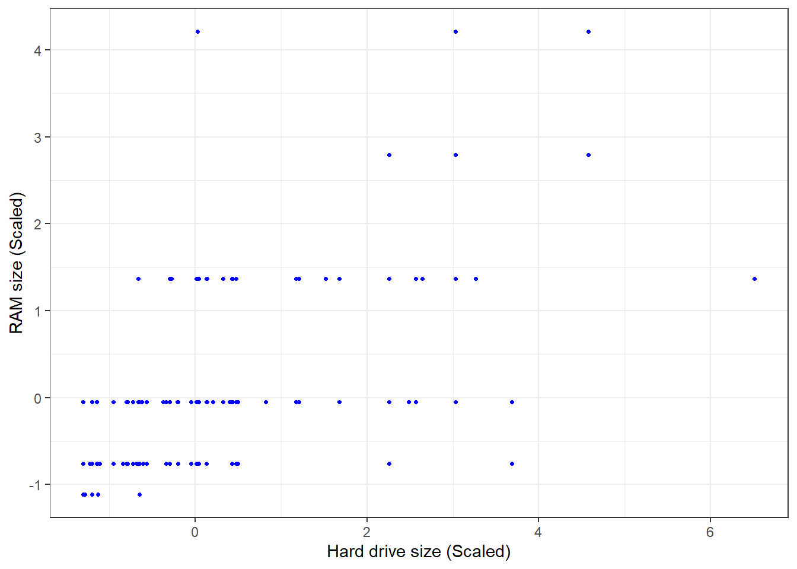
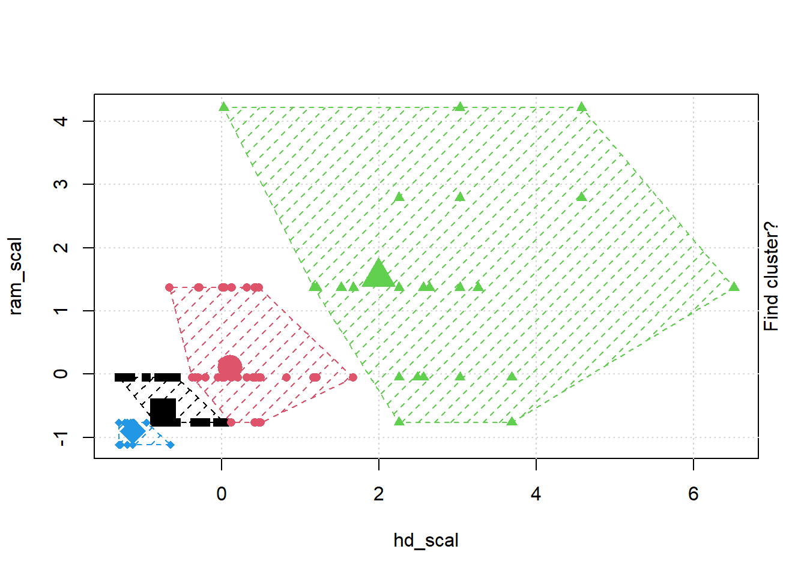
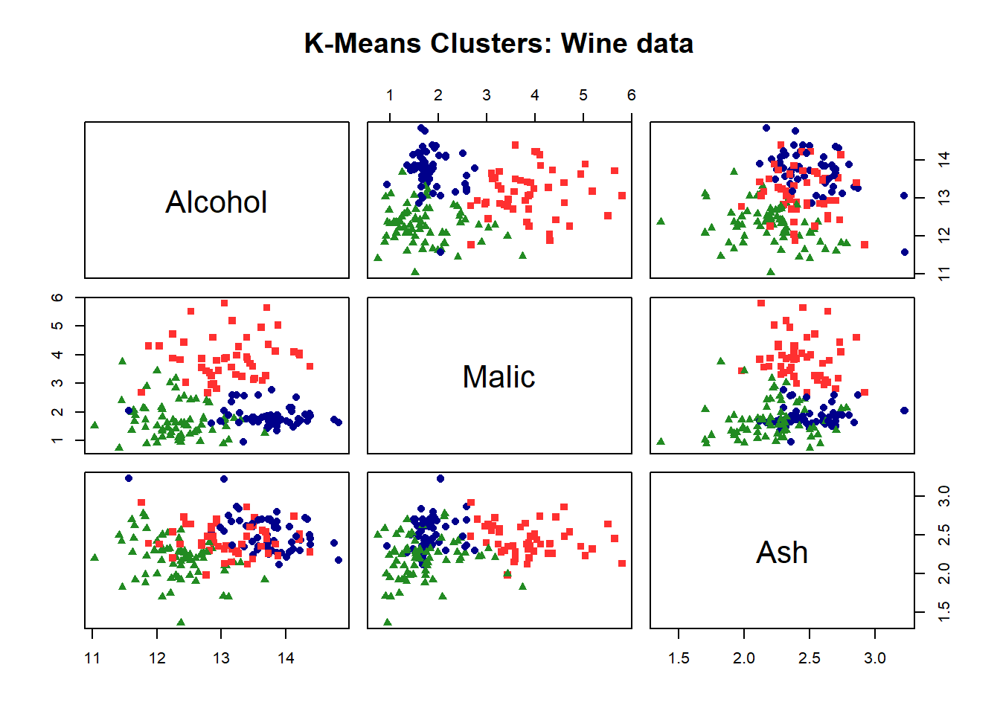
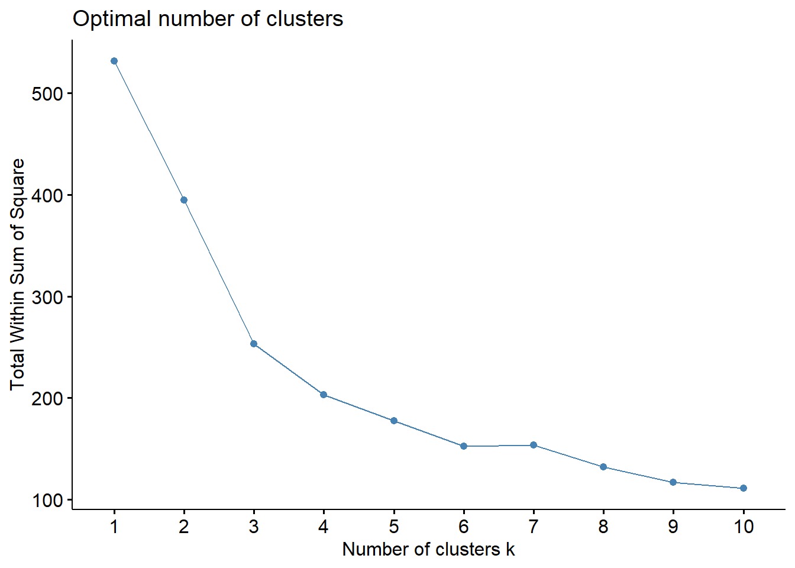
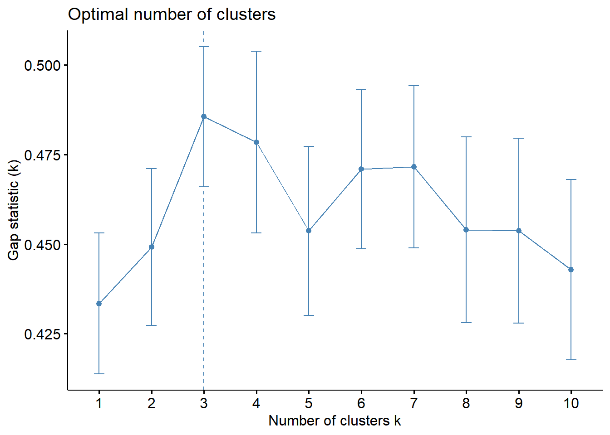
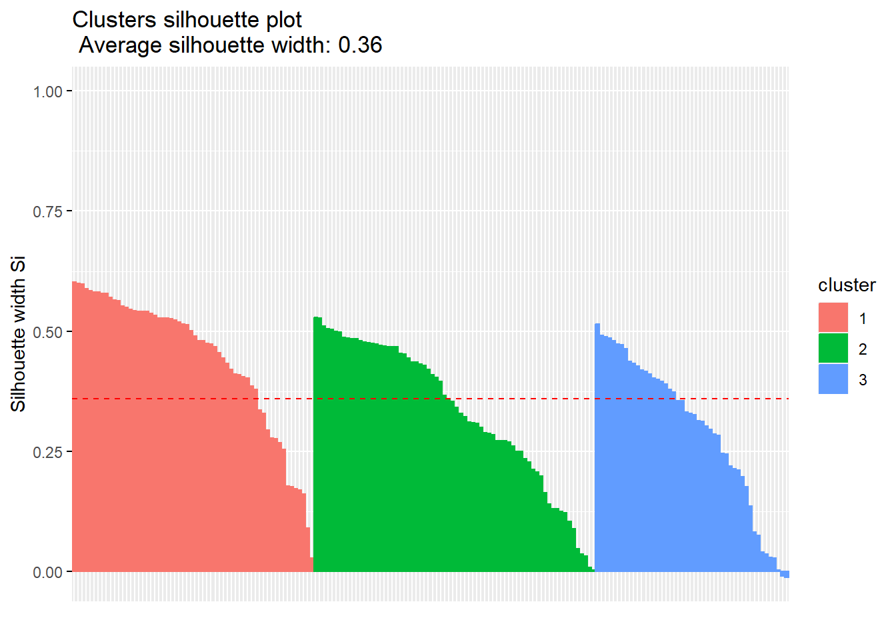

## Gentle Machine Learning
## Clustering: K-means, Hierarchical Clustering
## Computer purchase example: Animated illustration
## Adapted from Guru99 tutorial (https://www.guru99.com/r-k-means-clustering.html)
## Dataset: characteristics of computers purchased.
## Variables used: RAM size, Harddrive size
library(dplyr)
Attaching package: 'dplyr'The following objects are masked from 'package:stats':
filter, lagThe following objects are masked from 'package:base':
intersect, setdiff, setequal, unionlibrary(ggplot2)
library(RColorBrewer)
computers = read.csv("https://raw.githubusercontent.com/guru99-edu/R-Programming/master/computers.csv")
# Only retain two variables for illustration
rescaled_comp <- computers[4:5] %>%
mutate(hd_scal = scale(hd),
ram_scal = scale(ram)) %>%
select(c(hd_scal, ram_scal))
ggplot(data = rescaled_comp, aes(x = hd_scal, y = ram_scal)) +
geom_point(pch=20, col = "blue") + theme_bw() +
labs(x = "Hard drive size (Scaled)", y ="RAM size (Scaled)" ) +
theme(text = element_text(family="Georgia")) Warning in grid.Call(C_stringMetric, as.graphicsAnnot(x$label)): font family
not found in Windows font database
Warning in grid.Call(C_stringMetric, as.graphicsAnnot(x$label)): font family
not found in Windows font databaseWarning in grid.Call(C_textBounds, as.graphicsAnnot(x$label), x$x, x$y, : font
family not found in Windows font database
Warning in grid.Call(C_textBounds, as.graphicsAnnot(x$label), x$x, x$y, : font
family not found in Windows font database
Warning in grid.Call(C_textBounds, as.graphicsAnnot(x$label), x$x, x$y, : font
family not found in Windows font database
Warning in grid.Call(C_textBounds, as.graphicsAnnot(x$label), x$x, x$y, : font
family not found in Windows font database
Warning in grid.Call(C_textBounds, as.graphicsAnnot(x$label), x$x, x$y, : font
family not found in Windows font database
Warning in grid.Call(C_textBounds, as.graphicsAnnot(x$label), x$x, x$y, : font
family not found in Windows font databaseWarning in grid.Call.graphics(C_text, as.graphicsAnnot(x$label), x$x, x$y, :
font family not found in Windows font database
# install.packages("animation")
library(animation)
set.seed(2345)
library(animation)
# Animate the K-mean clustering process, cluster no. = 4
kmeans.ani(rescaled_comp[1:2], centers = 4, pch = 15:18, col = 1:4) 





## Iris example
# Without grouping by species
ggplot(iris, aes(Petal.Length, Petal.Width)) + geom_point() +
theme_bw() +
scale_color_manual(values=c("firebrick1","forestgreen","darkblue"))# With grouping by species
ggplot(iris, aes(Petal.Length, Petal.Width, color = Species)) + geom_point() +
theme_bw() +
scale_color_manual(values=c("firebrick1","forestgreen","darkblue"))# Check k-means clusters
## Starting with three clusters and 20 initial configurations
set.seed(20)
irisCluster <- kmeans(iris[, 3:4], 3, nstart = 20)
irisClusterK-means clustering with 3 clusters of sizes 52, 48, 50
Cluster means:
Petal.Length Petal.Width
1 4.269231 1.342308
2 5.595833 2.037500
3 1.462000 0.246000
Clustering vector:
[1] 3 3 3 3 3 3 3 3 3 3 3 3 3 3 3 3 3 3 3 3 3 3 3 3 3 3 3 3 3 3 3 3 3 3 3 3 3
[38] 3 3 3 3 3 3 3 3 3 3 3 3 3 1 1 1 1 1 1 1 1 1 1 1 1 1 1 1 1 1 1 1 1 1 1 1 1
[75] 1 1 1 2 1 1 1 1 1 2 1 1 1 1 1 1 1 1 1 1 1 1 1 1 1 1 2 2 2 2 2 2 1 2 2 2 2
[112] 2 2 2 2 2 2 2 2 1 2 2 2 2 2 2 1 2 2 2 2 2 2 2 2 2 2 2 1 2 2 2 2 2 2 2 2 2
[149] 2 2
Within cluster sum of squares by cluster:
[1] 13.05769 16.29167 2.02200
(between_SS / total_SS = 94.3 %)
Available components:
[1] "cluster" "centers" "totss" "withinss" "tot.withinss"
[6] "betweenss" "size" "iter" "ifault" class(irisCluster$cluster)[1] "integer"# Confusion matrix
table(irisCluster$cluster, iris$Species)
setosa versicolor virginica
1 0 48 4
2 0 2 46
3 50 0 0irisCluster$cluster <- as.factor(irisCluster$cluster)
ggplot(iris, aes(Petal.Length, Petal.Width, color = irisCluster$cluster)) + geom_point() +
scale_color_manual(values=c("firebrick1","forestgreen","darkblue")) +
theme_bw()
actual = ggplot(iris, aes(Petal.Length, Petal.Width, color = Species)) + geom_point() +
theme_bw() +
scale_color_manual(values=c("firebrick1","forestgreen","darkblue")) +
theme(legend.position="bottom") +
theme(text = element_text(family="Georgia"))
kmc = ggplot(iris, aes(Petal.Length, Petal.Width, color = irisCluster$cluster)) + geom_point() +
theme_bw() +
scale_color_manual(values=c("firebrick1", "darkblue", "forestgreen")) +
theme(legend.position="bottom") +
theme(text = element_text(family="Georgia"))
library(grid)
library(gridExtra)
Attaching package: 'gridExtra'The following object is masked from 'package:dplyr':
combinegrid.arrange(arrangeGrob(actual, kmc, ncol=2, widths=c(1,1)), nrow=1)Warning in grid.Call(C_textBounds, as.graphicsAnnot(x$label), x$x, x$y, : font
family not found in Windows font databaseWarning in grid.Call(C_textBounds, as.graphicsAnnot(x$label), x$x, x$y, : font
family not found in Windows font database
Warning in grid.Call(C_textBounds, as.graphicsAnnot(x$label), x$x, x$y, : font
family not found in Windows font database
Warning in grid.Call(C_textBounds, as.graphicsAnnot(x$label), x$x, x$y, : font
family not found in Windows font database
Warning in grid.Call(C_textBounds, as.graphicsAnnot(x$label), x$x, x$y, : font
family not found in Windows font database
Warning in grid.Call(C_textBounds, as.graphicsAnnot(x$label), x$x, x$y, : font
family not found in Windows font database
Warning in grid.Call(C_textBounds, as.graphicsAnnot(x$label), x$x, x$y, : font
family not found in Windows font database
Warning in grid.Call(C_textBounds, as.graphicsAnnot(x$label), x$x, x$y, : font
family not found in Windows font database
Warning in grid.Call(C_textBounds, as.graphicsAnnot(x$label), x$x, x$y, : font
family not found in Windows font database
Warning in grid.Call(C_textBounds, as.graphicsAnnot(x$label), x$x, x$y, : font
family not found in Windows font database
Warning in grid.Call(C_textBounds, as.graphicsAnnot(x$label), x$x, x$y, : font
family not found in Windows font databaseWarning in grid.Call.graphics(C_text, as.graphicsAnnot(x$label), x$x, x$y, :
font family not found in Windows font databaseWarning in grid.Call(C_textBounds, as.graphicsAnnot(x$label), x$x, x$y, : font
family not found in Windows font database
Warning in grid.Call(C_textBounds, as.graphicsAnnot(x$label), x$x, x$y, : font
family not found in Windows font database
Warning in grid.Call(C_textBounds, as.graphicsAnnot(x$label), x$x, x$y, : font
family not found in Windows font database
Warning in grid.Call(C_textBounds, as.graphicsAnnot(x$label), x$x, x$y, : font
family not found in Windows font database
Warning in grid.Call(C_textBounds, as.graphicsAnnot(x$label), x$x, x$y, : font
family not found in Windows font database
Warning in grid.Call(C_textBounds, as.graphicsAnnot(x$label), x$x, x$y, : font
family not found in Windows font database
Warning in grid.Call(C_textBounds, as.graphicsAnnot(x$label), x$x, x$y, : font
family not found in Windows font database
Warning in grid.Call(C_textBounds, as.graphicsAnnot(x$label), x$x, x$y, : font
family not found in Windows font database
Warning in grid.Call(C_textBounds, as.graphicsAnnot(x$label), x$x, x$y, : font
family not found in Windows font databaseWarning in grid.Call.graphics(C_text, as.graphicsAnnot(x$label), x$x, x$y, :
font family not found in Windows font databaseWarning in grid.Call(C_textBounds, as.graphicsAnnot(x$label), x$x, x$y, : font
family not found in Windows font database
Warning in grid.Call(C_textBounds, as.graphicsAnnot(x$label), x$x, x$y, : font
family not found in Windows font database## Wine example
# install.packages("rattle.data")
# wine dataset contains the results of a chemical analysis of wines
# grown in a specific area of Italy. Three types of wine are represented in the
# 178 samples, with the results of 13 chemical analyses recorded for each sample.
# The Type variable has been transformed into a categorical variable.
# Variables used in this example
# Alcohol
# Malic: Malic acid
# Ash
library(rattle.data)
data(wine, package="rattle.data")
## Choose and scale variables
wine_subset <- scale(wine[ , c(2:4)])
## Create cluster using k-means, k = 3, with 25 initial configurations
wine_cluster <- kmeans(wine_subset, centers = 3,
iter.max = 10,
nstart = 25)
wine_clusterK-means clustering with 3 clusters of sizes 48, 60, 70
Cluster means:
Alcohol Malic Ash
1 0.1470536 1.3907328 0.2534220
2 0.8914655 -0.4522073 0.5406223
3 -0.8649501 -0.5660390 -0.6371656
Clustering vector:
[1] 2 3 2 2 2 2 2 2 2 2 2 2 2 2 2 2 2 2 2 1 2 1 2 2 2 2 2 3 2 2 2 2 2 2 2 2 2
[38] 2 3 1 2 1 2 1 3 1 1 2 2 2 3 2 2 2 2 2 2 2 2 3 3 3 3 3 3 3 3 3 2 3 3 2 2 2
[75] 3 3 3 3 3 1 3 3 3 1 3 3 3 3 3 3 3 3 3 3 3 3 3 3 3 3 3 3 3 3 3 3 3 3 3 3 3
[112] 3 1 3 3 3 3 3 1 3 3 2 1 1 1 3 3 3 3 1 3 1 3 1 3 3 1 1 1 1 1 2 1 1 1 1 1 1
[149] 1 1 1 1 2 1 3 1 1 1 2 2 1 1 1 1 2 1 1 1 2 1 3 3 2 1 1 1 2 1
Within cluster sum of squares by cluster:
[1] 73.71460 67.98619 111.63512
(between_SS / total_SS = 52.3 %)
Available components:
[1] "cluster" "centers" "totss" "withinss" "tot.withinss"
[6] "betweenss" "size" "iter" "ifault" # Create a function to compute and plot total within-cluster sum of square (withinss)
wssplot <- function(data, nc=15, seed=1234){
wss <- (nrow(data)-1)*sum(apply(data,2,var))
for (i in 2:nc){
set.seed(seed)
wss[i] <- sum(kmeans(data, centers=i)$withinss)}
plot(1:nc, wss, type="b", xlab="Number of Clusters",
ylab="Within groups sum of squares")
}
# plotting values for each cluster starting from 1 to 9
wssplot(wine_subset, nc = 9)# Plot results by dimensions
wine_cluster$cluster = as.factor(wine_cluster$cluster)
pairs(wine[2:4],
col = c("firebrick1", "darkblue", "forestgreen")[wine_cluster$cluster],
pch = c(15:17)[wine_cluster$cluster],
main = "K-Means Clusters: Wine data")
table(wine_cluster$cluster)
1 2 3
48 60 70 ## Use the factoextra package to do more
# install.packages("factoextra")
library(factoextra)Welcome! Want to learn more? See two factoextra-related books at https://goo.gl/ve3WBafviz_nbclust(wine_subset, kmeans, method = "wss")
# Use eclust() procedure to do K-Means
wine.km <- eclust(wine_subset, "kmeans", nboot = 2)# Print result
wine.kmK-means clustering with 3 clusters of sizes 60, 70, 48
Cluster means:
Alcohol Malic Ash
1 0.8914655 -0.4522073 0.5406223
2 -0.8649501 -0.5660390 -0.6371656
3 0.1470536 1.3907328 0.2534220
Clustering vector:
[1] 1 2 1 1 1 1 1 1 1 1 1 1 1 1 1 1 1 1 1 3 1 3 1 1 1 1 1 2 1 1 1 1 1 1 1 1 1
[38] 1 2 3 1 3 1 3 2 3 3 1 1 1 2 1 1 1 1 1 1 1 1 2 2 2 2 2 2 2 2 2 1 2 2 1 1 1
[75] 2 2 2 2 2 3 2 2 2 3 2 2 2 2 2 2 2 2 2 2 2 2 2 2 2 2 2 2 2 2 2 2 2 2 2 2 2
[112] 2 3 2 2 2 2 2 3 2 2 1 3 3 3 2 2 2 2 3 2 3 2 3 2 2 3 3 3 3 3 1 3 3 3 3 3 3
[149] 3 3 3 3 1 3 2 3 3 3 1 1 3 3 3 3 1 3 3 3 1 3 2 2 1 3 3 3 1 3
Within cluster sum of squares by cluster:
[1] 67.98619 111.63512 73.71460
(between_SS / total_SS = 52.3 %)
Available components:
[1] "cluster" "centers" "totss" "withinss" "tot.withinss"
[6] "betweenss" "size" "iter" "ifault" "clust_plot"
[11] "silinfo" "nbclust" "data" "gap_stat" # Optimal number of clusters using gap statistics
wine.km$nbclust[1] 3fviz_nbclust(wine_subset, kmeans, method = "gap_stat")
# Silhouette plot
fviz_silhouette(wine.km) cluster size ave.sil.width
1 1 60 0.44
2 2 70 0.33
3 3 48 0.30
fviz_cluster(wine_cluster, data = wine_subset) +
theme_bw() +
theme(text = element_text(family="Georgia")) Warning in grid.Call(C_textBounds, as.graphicsAnnot(x$label), x$x, x$y, : font
family not found in Windows font database
Warning in grid.Call(C_textBounds, as.graphicsAnnot(x$label), x$x, x$y, : font
family not found in Windows font databaseWarning in grid.Call(C_stringMetric, as.graphicsAnnot(x$label)): font family
not found in Windows font databaseWarning in grid.Call(C_textBounds, as.graphicsAnnot(x$label), x$x, x$y, : font
family not found in Windows font database
Warning in grid.Call(C_textBounds, as.graphicsAnnot(x$label), x$x, x$y, : font
family not found in Windows font database
Warning in grid.Call(C_textBounds, as.graphicsAnnot(x$label), x$x, x$y, : font
family not found in Windows font database
Warning in grid.Call(C_textBounds, as.graphicsAnnot(x$label), x$x, x$y, : font
family not found in Windows font database
Warning in grid.Call(C_textBounds, as.graphicsAnnot(x$label), x$x, x$y, : font
family not found in Windows font database
Warning in grid.Call(C_textBounds, as.graphicsAnnot(x$label), x$x, x$y, : font
family not found in Windows font database
Warning in grid.Call(C_textBounds, as.graphicsAnnot(x$label), x$x, x$y, : font
family not found in Windows font database
Warning in grid.Call(C_textBounds, as.graphicsAnnot(x$label), x$x, x$y, : font
family not found in Windows font database
Warning in grid.Call(C_textBounds, as.graphicsAnnot(x$label), x$x, x$y, : font
family not found in Windows font database
Warning in grid.Call(C_textBounds, as.graphicsAnnot(x$label), x$x, x$y, : font
family not found in Windows font databaseWarning in grid.Call.graphics(C_text, as.graphicsAnnot(x$label), x$x, x$y, :
font family not found in Windows font databaseWarning in grid.Call(C_textBounds, as.graphicsAnnot(x$label), x$x, x$y, : font
family not found in Windows font database
Warning in grid.Call(C_textBounds, as.graphicsAnnot(x$label), x$x, x$y, : font
family not found in Windows font database
Warning in grid.Call(C_textBounds, as.graphicsAnnot(x$label), x$x, x$y, : font
family not found in Windows font databasefviz_cluster(wine_cluster, data = wine_subset, ellipse.type = "norm") +
theme_bw() +
theme(text = element_text(family="Georgia")) Warning in grid.Call(C_textBounds, as.graphicsAnnot(x$label), x$x, x$y, : font
family not found in Windows font database
Warning in grid.Call(C_textBounds, as.graphicsAnnot(x$label), x$x, x$y, : font
family not found in Windows font database
Warning in grid.Call(C_textBounds, as.graphicsAnnot(x$label), x$x, x$y, : font
family not found in Windows font database
Warning in grid.Call(C_textBounds, as.graphicsAnnot(x$label), x$x, x$y, : font
family not found in Windows font database
Warning in grid.Call(C_textBounds, as.graphicsAnnot(x$label), x$x, x$y, : font
family not found in Windows font database
Warning in grid.Call(C_textBounds, as.graphicsAnnot(x$label), x$x, x$y, : font
family not found in Windows font database
Warning in grid.Call(C_textBounds, as.graphicsAnnot(x$label), x$x, x$y, : font
family not found in Windows font database
Warning in grid.Call(C_textBounds, as.graphicsAnnot(x$label), x$x, x$y, : font
family not found in Windows font database
Warning in grid.Call(C_textBounds, as.graphicsAnnot(x$label), x$x, x$y, : font
family not found in Windows font database
Warning in grid.Call(C_textBounds, as.graphicsAnnot(x$label), x$x, x$y, : font
family not found in Windows font database
Warning in grid.Call(C_textBounds, as.graphicsAnnot(x$label), x$x, x$y, : font
family not found in Windows font database
Warning in grid.Call(C_textBounds, as.graphicsAnnot(x$label), x$x, x$y, : font
family not found in Windows font databaseWarning in grid.Call.graphics(C_text, as.graphicsAnnot(x$label), x$x, x$y, :
font family not found in Windows font databaseWarning in grid.Call(C_textBounds, as.graphicsAnnot(x$label), x$x, x$y, : font
family not found in Windows font database
Warning in grid.Call(C_textBounds, as.graphicsAnnot(x$label), x$x, x$y, : font
family not found in Windows font database
Warning in grid.Call(C_textBounds, as.graphicsAnnot(x$label), x$x, x$y, : font
family not found in Windows font database## Hierarchical Clustering
## Dataset: USArrests
# install.packages("cluster")
arrest.hc <- USArrests %>%
scale() %>% # Scale the data
dist(method = "euclidean") %>% # Compute dissimilarity matrix
hclust(method = "ward.D2") # Compute hierarchical clustering
# Visualize using factoextra
# Cut in 4 groups and color by groups
fviz_dend(arrest.hc, k = 4, # Cut in four groups
cex = 0.5, # label size
k_colors = c("firebrick1","forestgreen","blue", "purple"),
color_labels_by_k = TRUE, # color labels by groups
rect = TRUE, # Add rectangle around groups,
main = "Cluster Dendrogram: USA Arrest data"
) + theme(text = element_text(family="Georgia")) Warning: The `<scale>` argument of `guides()` cannot be `FALSE`. Use "none" instead as
of ggplot2 3.3.4.
font family not found in Windows font database
font family not found in Windows font database
font family not found in Windows font database
font family not found in Windows font database
font family not found in Windows font database
font family not found in Windows font database
font family not found in Windows font database
font family not found in Windows font database
The deprecated feature was likely used in the factoextra package.
Please report the issue at <https://github.com/kassambara/factoextra/issues>.Warning in grid.Call.graphics(C_text, as.graphicsAnnot(x$label), x$x, x$y, :
font family not found in Windows font databaseWarning in grid.Call(C_textBounds, as.graphicsAnnot(x$label), x$x, x$y, : font
family not found in Windows font database